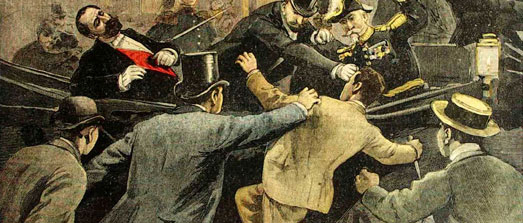

< return to music page
A Sante Caserio
This song was written by Pietro Gori, anarchist lawyer and author, about his fellow Italian exile, Sante Geronimo Caserio. Caserio was the son of a boatman, who named him after the Apache famous for resisting white expansion in western North America. Sentenced to eight months in prison for distributing antimilitarist pamphlets, the young Caserio was forced to flee to Switzerland, then France. There, he assassinated French President Sadi Carnot, leaping upon his carriage during a parade and plunging a red and black dagger into his chest in retribution for Carnot’s refusal to pardon other anarchists condemned to death. Questioned as to the identities of his comrades, he replied, “I’m a baker, not a spy.” He was guillotined a few weeks before his twenty-second birthday. Caserio is memorialized in several Italian anarchist folk songs, another of which preserves his famous response to the official who asked if he regretted his crime: “Had they given me another five minutes, I would have killed another president.”
Lavoratori a voi diretto è il canto
Di questa mia canzon che sa di pianto
E che ricorda un baldo giovin forte
Che per amor di voi sfidò la morte.
A te Caserio ardea nella pupilla
De le vedete umane la scintilla
Ed alla plebe che lavora e geme
Donasti ogni tuo affetto, ogni tua speme.
Eri ñello splendore della vita
E non vedesti che notte infinita,
La notte dei dolori e della fame
Che incombe sull’immenso uman carname.
E ti levasti in atto di dolore
Di ignoti strazi altier vendicatore
E t’avventasti tu si buono e mite
A scuoter l’alme stanche ed avvilite
Tremarono i potenti all’atti fiero
E nuove insidie tesero al pensiero
Ma il popolo a cui tutto donasti
Non ti comprese, eppur tu non piegasti.
E i tuoi vent’anni una feral mattina
Donasti al mondo da la ghigliottina
Al mondo vil tua grand’alma pia
Alto gridando: “Viva l'Anarchia!”
Dormi Caserio entro la fredda terra
Donde ruggire udrai la final guerra.
A rough translation furnished by an Italian comrade:
Workers, these words are for you
Of this sorrowful song of mine
Which celebrates a bold and strong young man
Who for love of you challenged death
It shined in your pupils Caserio
The spark of the human peak
And to the working and crying people
You dedicated all your love and hope
You were in the prime of life
And you saw nothing but the endless night,
The night of pain and hunger
That towers over the immense and putrid human crowd
And you rose in painful act
To avenge a stranger’s suffering
And you struggled, you so good and mild
To shake those tired and disheartened souls
The powerful shuddered at this proud act
And new treacherous plans were hatched in their minds
But the people to whom you gave yourself entirely
Did not understand you, and yet you didn’t yield.
And your twenty-odd years one feral morning
You offered to the world from the guillotine
While your compassionate soul to the cowardly world
Cried out: “Viva l’Anarchia!”
Sleep Caserio in the cold soil
Where you’ll hear the rumble of the final war.
Another version of this song can be found here.
Another classic song about Caserio can be found here, and the lyrics here.